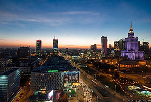
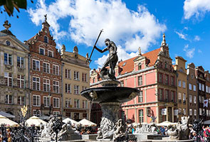
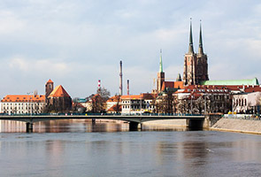
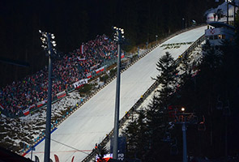
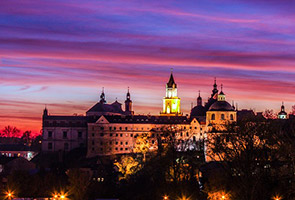
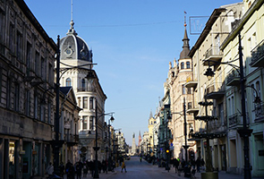
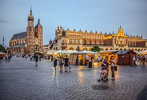

Warszawa (Warsaw) is the capital of Poland and also its biggest city. Warsaw is an important scientific, cultural, political and economic center. The city houses the seats of parliament, the Council of Ministers, the President and other key authorities in Poland. Although, not as famous as Cracow’s, Warsaw’s old town is beautiful and picturesque. Badly damaged during World War II, it is now impressively reconstructed. Among a myriad of different histological and technological museums Warsaw can offer tourist a relaxing by the ban of Wisla river, or a calm stroll through the Lazienki Park.

Gdansk is located in the north of Poland, near the Baltic Sea. Owing to its location, Gdansk is and always has been a fast advancing city. It is also currently an important scientific and cultural center as well as a commercial hub. Together with Gdynia and Sopot, it forms an agglomeration called the Tri-City with a total of nearly 800,000 inhabitants. Gdansk has a multitude of beautiful historical buildings worth visiting. If you want for a holiday where you can go sightseeing, visit museums but also relax on the beach, Gdansk is definitely a must see.

Wroclaw is one of the oldest and most beautiful cities on Poland. Located on the Odra river, it is crossed by numerous tributaries and canals, owing to which, Wroclaw is a unique city of 12 islands and over a hundred bridges. Wroclaw is a hidden gem in Poland. The medieval market square in Wroclaw has an architectural beauty comparable to those of Krakow or Prague. Among may other attractions, the Cathedral Island and old town hall are definitely worth visiting.

Zakopane is dubbed “winter capital of Poland” and is the highest situated city in Poland located in the south in the High Tatras region. Zakopane is a famous ski resort. It is charming and friendly town ideal for winder or summer holidays. The main attraction of Zakopane is a beautiful lake, Morskie Oko, located just a hike away from the city. There is many hiking routes for people who enjoy a bit of a challenge, but also for amateur hikers.

Lublin is one of the most beautiful cities of eastern Poland. It is the largest and the most dynamically developing city on the right side of the Wisla. The rich, seven-century history of Lublin and its location in a multicultural melting pot determine its special values. It is an enchanted place that attracts with its unique climate, rich architecture and numerous monuments. Lublin is an excellent place to experience the real Poland as tourism level is lower than in Cracow, Warsaw or Gdansk.

Łódź (Lodz) is third biggest city (after Warsaw and Cracow) located in the central Poland. It is multicultural, fast advancing and creative university city. Lodz is known for its textile industry and nation renowned film school. It is also a home to one of the biggest Polish football clubs "Widzew". Most central and representative part of city is 4km long Piotrkowska street, which is also centre of cultural life in Lodz. A trip to Lodz is simply not complete without visiting “Manufaktura”, “Ksiezy Mlyn”, planetarium and Jewish cemetery.

Kraków (Cracow) is among most famous Polish cities. It has one of the most beautiful old towns in Europe. Cracow is a city with a thousand years of history, the former seat of Polish kings and former capital of Poland, it houses the oldest and most renowned of Polish universities, Uniwersytet Jagielonski. Cracow offers a lot of tourist attractions, events, concerts and a very busy nightlife. A definite must see places in Cracow are the Wawel, Main Square, the Jewish quarter, Wieliczka salt mine and the Auschwitz concentration camp.